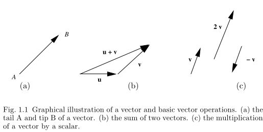
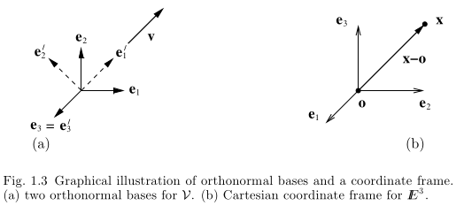
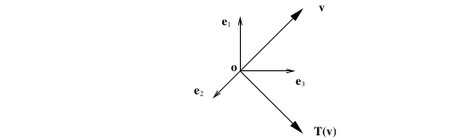

Unit 1: Tensor Algebra
Reading: [AFCiCM/08] Chapter 1
2025-02-20
Preliminaries
Units
What is the unit of force?
- The fundamental units required to define the unit of force are the following
- Length [L]
- Mass [M]
- Time [T]
- International System of Units, Newton, dyne, etc.
- Anglo-saxon System of Units, lb-f
(\(\S 1.1\)) Vectors (Session 1)
- A vector (or a first-order tensor, in general) is merely an abstraction/representation of a mechanical effect (a force, velocity, displacement, linear momentum, gradient of a scalar field variable, etc.).
- It is one of the main actors in the field of mechanics (apart from others such as scalars, or higher-order tensors).
Symbolic Representation of Vectors
- A vector/tensor is usually represented by placing a right arrow over the letter: \[ \vec{F},\; \vec{a},\,\, \vec{\nabla}\phi \]
- or a tilde symbol below as in: \[ \underset{\sim}{F},\; \underset{\sim}{a},\; \underset{\sim}{\nabla}\phi \]
- or simply using boldface if one has access to a modern typesetting system (such as latex) \[ \boldsymbol{F},\; \boldsymbol{a},\; \boldsymbol{\nabla}\phi \]
- the difference of the \(\nabla\) is that it is an operator which requires an argument, for example a scalar field variable such as the temperature \(T\) \[ \boldsymbol{\nabla}{T} \]
- represents the gradient of the temperature field.
Graphical Representation of Vectors

- Simplest algebraic operations such as addition or subtraction of two vectors, or the multiplication of a vector by a scalar can be performed graphically.
- By letting \(\mathcal{V}\) be the set of all vectors, then it should be TRUE that \[ \boldsymbol{u} + \boldsymbol{v} \in \mathcal{V} \;\; \forall \boldsymbol{u},\,\boldsymbol{v} \in \mathcal{V} \;\; \mathrm{and}\;\; \alpha\boldsymbol{v} \in \mathcal{V} \;\; \forall \alpha \in \mathbb{R},\; \boldsymbol{v} \in \mathcal{V}\,.\]
(\(\S 1.1.2\)) Scalar and Vector Products
- The scalar or dot product is defined as the product of the magnitudes of both arguments, and cosine of the acute angle \(\theta \in [0,\pi]\) subtended between the argument vectors placed tail to tail.
- The vector product is defined by a vector pointing normal to the plane formed by the argument vectors, in the sense shown by turning from the first argument towards the second using the right hand, having a magnitude equal to the products of the magnitudes of the argument vectors and the sine of the same angle, \(\theta \in [0,\pi]\).
- you can figure out the triple scalar product between three vectors. (Resulting in the volume of the parallelpiped formed by the three arguments.)
a = [0,1.5,3]';
b = [-2 2 1]';
c = dot(a,b);
d = cross(a,b);
(\(\S 1.1.3\)) Projections, Bases and Coordinate Frames
- Any vector \(\boldsymbol{v}\) can be decomposed into two vectors, one of which (\(\boldsymbol{v}_{e\parallel}\)) is parallel to a given direction (unit vector) \(\boldsymbol{e}\), and the other (\(\boldsymbol{v}_{e\perp}\)) perpendicular to \(\boldsymbol{e}\).
- A right handed orthonormal basis (\(\boldsymbol{i}, \boldsymbol{j}, \boldsymbol{k}\) or \(\boldsymbol{e}_1, \boldsymbol{e}_2, \boldsymbol{e}_3\)) is one relative to which vectors can be decomposed into components along the three coordinate axes (a Cartesian coordinate system).
- Respective vector components \(v_1,\,v_2,\,v_3\) are found by taking the dot product between the vector \(\boldsymbol{v}\) and each one of the unit vectors \(\boldsymbol{e}_i,\,i=1,2,3\).
- And the vector can be written as a sum of its projections onto the three coordinate axes (the classical notation).
- An alternate way of expressing the vector \(\boldsymbol{v}\) is the matrix notation. There the vector components are written as an ordered triplet listed in a column.

Let there be two bases \(\{\boldsymbol{e}_i\}\) and \(\{\boldsymbol{e}'_i\}\), the primed system rotated about the third axis in the positive sense by 45 degrees. A vector \(\boldsymbol{v}\) which has components \([1,1,0]\) in the first system will have what components in the primed system?
Questions for next session
Ask AI:
- Explain the indicial notation from physics
Deliverables
Students should be able to:
[ ]perform simple algebraic operations with vectors
(\(\S 1.2\)) Index Notation (Session 2)
- This is the way to code mechanics in a computational setting (such as Octave/matlab, or a finite element method tool).
- It simplifies the scalar (inner) product operation greatly.
- It provides a new tool for cyclic permutation.
(\(\S 1.2.1\))Summation Convention
- Instead of summing over the dimensions by rewriting each term for every other repeating dimension, a repeating (dummy) index implies summation (thus eliminating the need to write three terms explicitly), examples,
- \(\boldsymbol{a}\),
- \(\boldsymbol{a}\cdot\boldsymbol{b}\),
- \(\boldsymbol{a} = (\boldsymbol{c}\cdot\boldsymbol{b})\,\boldsymbol{b}\), etc.
- An index may not repeat more than twice,
- Non-repeating indices are called as free indices,
- A valid expression according to summation convention should have the same free indices appearing at each term.
- Work out some examples…
(\(\S 1.2.2\)) Kroenecker’s Delta and Permutation Symbols
- The Kroenecker delta symbol, \(\delta_{ij}\), is defined the dot (inner) product of base vectors.
- It is also known as an index shifter (\(\boldsymbol{e}_i = \delta_{ij}\boldsymbol{e}_j\)).
- The permutation (alternator) symbol, \(\epsilon_{ijk}\), is defined from the cyclic permutation that appears in the cross-product operation (\(\boldsymbol{e}_i\times \boldsymbol{e}_j = \epsilon_{ijk}\boldsymbol{e}_k\))
- The permutation symbol also proves useful in representing the determinant of a second-order tensor.
Exercises: (\(\S 1.2.4\)) Vector Operations in Components
- the scalar (inner) product
- the vector (cross) product
- the triple scalar product
- the triple vector product
Questions for next session
Ask AI:
- what is a second order tensor?
Deliverables
Students should be able to:
[ ]read and verify expressions written in the indicial notation[ ]convert expressions between their tensor and indicial forms
(\(\S 1.3\)) Second-Order Tensors (Session 3)
- Scalars have no index, first-order tensors (vectors) have one. The index is also referred to as the basis.
- Abstraction of a physical field or operator that has two indices or bases, is called as a second-order tensor.
- A transformer between vectors, \(\boldsymbol{S}\boldsymbol{u} = \boldsymbol{v}\), or \(\boldsymbol{S}(\boldsymbol{u}) = \boldsymbol{v}\)
(\(\S 1.3.1\)) Definition
On the vector space \(\mathcal{V}\), we have a linear mapping \(\boldsymbol{T}:\mathcal{V}\rightarrow\mathcal{V}\) such that
- \[\boldsymbol{T} (\boldsymbol{u} + \boldsymbol{v}) = \boldsymbol{T}\boldsymbol{u} + \boldsymbol{T} \boldsymbol{v} \; \forall \; \boldsymbol{u},\,\boldsymbol{v} \in \mathcal{V},\]
- \[\boldsymbol{T}(\alpha \boldsymbol{u}) = \alpha \boldsymbol{T}\,\boldsymbol{u} \; \forall \; \alpha \in \mathbb{R} \; \mathrm{and} \; \boldsymbol{u} \in \mathcal{V}.\]
- The zero tensor annuls anything it multiplies with
- The identity tensor \(\boldsymbol{I}\), reproduces its argument as its result: \(\boldsymbol{I} \boldsymbol{v} = \boldsymbol{v}\).
- The equality of two second-order tensors may be established by the identity \(\boldsymbol{S}\boldsymbol{v}=\boldsymbol{T}\boldsymbol{v}\) for all \(\boldsymbol{v} \in \mathcal{C}\).
Example 1: Projections:

Example 2: Rotations:

Example 3: Reflections:

(\(\S 1.3.2\)) Second-Order Tensor Algebra
Let \(\mathcal{V}^2\) be the set of second-order tensors, then
- The summation of two elements of \(\mathcal{V}^2\) is also a member of \(\mathcal{V}^2\),
- The multiplication of a member of \(\mathcal{V}^2\) by a scalar, is also a member of \(\mathcal{V}^2\),
- By multiplying two elements from \(\mathcal{V}^2\), taking the inner product (the summation between columns of the left tensor with the rows of the right tensor) between adjacent indices is implied.
- It is implied that \[(\boldsymbol{S}\boldsymbol{T})\boldsymbol{u} = \boldsymbol{S}(\boldsymbol{T}\boldsymbol{u})\]
(\(\S 1.3.3\)) Indicial Representation
- The components of a second-order tensor \(\boldsymbol{S}\) in a coordinate frame \(\{\boldsymbol{e}_i\}\) are nine numbers \(S_{ij}\;(1\leq i,j \leq 3)\) defined by \[S_{ij} = \boldsymbol{e}_i \cdot \boldsymbol{S}\boldsymbol{e}_j.\]
- Given vectors \(\boldsymbol{u} = u_i \boldsymbol{e}_i\) and \(\boldsymbol{v} = v_j \boldsymbol{e}_j\) such that \(\boldsymbol{v} = \boldsymbol{S} \boldsymbol{u}\), we can write \[v_i = S_{ij} u_j\]
- The nine components arranged into a square matrix is called the matrix representation, and is denoted as \([\boldsymbol{S}]\in\mathbb{R}\).
- The transpose operation is simply obtained by interchanging the rows and columns of the matrix \([\boldsymbol{S}]\), and is denoted as \([\boldsymbol{S}]^T\).
- The tensor equation \(\boldsymbol{v} = \boldsymbol{S} \boldsymbol{u}\) can be written in various forms as \[\boldsymbol{v} = \boldsymbol{S} \boldsymbol{u} \; \Leftrightarrow \; v_i=S_{ij}u_j \; \Leftrightarrow \; [\boldsymbol{v}] = [\boldsymbol{S}] [\boldsymbol{u}] \]
Questions for next session
Ask AI:
- How can a second-order tensor be symmetric or invertible? What is the relationship between invertibility and determinant of a second-order tensor?
Deliverables
Students should be able to:
[ ]transform vectors linearly via second-order tensors[ ]convert expressions between their tensor and matrix forms
Special Classes and Operations (Session 4)
(\(\S 1.3.6\)) Symmetry, Inverse, Orthogonality, etc.
- To any tensor \(\boldsymbol{S}\in \mathcal{V}^2\) we associate a transpose \(\boldsymbol{S}^T \in \mathcal{V}^2\), which shows \[\boldsymbol{S}\boldsymbol{u} \cdot\boldsymbol{v} = \boldsymbol{u} \cdot \boldsymbol{S}^T\boldsymbol{v} \; \forall \boldsymbol{u},\boldsymbol{v} \in \mathcal{V}.\]
- We say, a tensor is symmetric if \(\boldsymbol{S}^T = \boldsymbol{S}\), and,
- skew-symmetric if \(\boldsymbol{S}^T = -\boldsymbol{S}\).
- A tensor \(\boldsymbol{T}\in \mathcal{V}^2\) is said to be positive-definite if it satisfies \[ \boldsymbol{v} \cdot \boldsymbol{T}\boldsymbol{v} > 0\; \forall \boldsymbol{v}\neq 0,\]
- and is said to be invertible if there exists an inverse \(\boldsymbol{P}^{-1}\in \mathcal{V}^2\) such that \[\boldsymbol{P}\boldsymbol{P}^{-1} = \boldsymbol{P}^{-1} \boldsymbol{P} = \boldsymbol{I}.\]
- The inverse and transpose operations may commute, that is \((\boldsymbol{P}^{-1})^T = (\boldsymbol{P}^T)^{-1}\), and this is usually denoted as \(\boldsymbol{S}^{-T}\).
- A tensor \(\boldsymbol{Q}\in \mathcal{V}^2\) is said to be orthogonal if \(\boldsymbol{Q}^T= \boldsymbol{Q}^{-1}\), that is \[\boldsymbol{Q}\boldsymbol{Q}^{T} = \boldsymbol{Q}^{T} \boldsymbol{Q} = \boldsymbol{I}.\] Such a tensor produces a right-handed rotation rotation, provided it has a positive determinant.
(\(\S 1.3.7\)) Change of Basis
- Let \(\{\boldsymbol{e}_i\}\) and \(\{\boldsymbol{e}'_i\}\) be two right-handed bases vector sets in \(\mathbb{E}^3\), where expression of the primed set in terms of the unprimed can be written as \[\boldsymbol{e}'_j = (\boldsymbol{e}_1 \cdot \boldsymbol{e}'_j) \boldsymbol{e}_1 + (\boldsymbol{e}_2 \cdot \boldsymbol{e}'_j) \boldsymbol{e}_2 + (\boldsymbol{e}_3 \cdot \boldsymbol{e}'_j) \boldsymbol{e}_3 = (\boldsymbol{e}_i \cdot \boldsymbol{e}'_j) \boldsymbol{e}_i,\]
- while the unprimed set can similarly be expressed in terms of the primed, as \[\boldsymbol{e}_j = (\boldsymbol{e}_j \cdot \boldsymbol{e}'_1) \boldsymbol{e}'_1 + (\boldsymbol{e}_j \cdot \boldsymbol{e}'_2) \boldsymbol{e}'_2 + (\boldsymbol{e}_j \cdot \boldsymbol{e}'_3) \boldsymbol{e}'_3 = (\boldsymbol{e}_j \cdot \boldsymbol{e}'_i) \boldsymbol{e}'_i.\]
- Defining the term in parantesis as the change of basis tensor (a.k.a. rotation), \(Q_{ij} = (\boldsymbol{e}_i \cdot \boldsymbol{e}'_j)\), the above expressions can be written as \(\boldsymbol{e}'_j = Q_{ij} \boldsymbol{e}_i\), and, \(\boldsymbol{e}_j = Q_{jk} \boldsymbol{e}'_k\).
- If the former expansion is used in the latter, or the latter is used in the former, we find out that the tensor \(\boldsymbol{Q}\) is orthogonal.
Transformation of Components Under a Change of Basis

- Consider an arbitrary vector \(\boldsymbol{v}\in\mathcal{V}\) as illustrated above. Let \([\boldsymbol{v}] = (v_1,v_2,v_3)^T\) be its representation in \(\{\boldsymbol{e}_i\}\), \([\boldsymbol{v}'] = (v'_1,v'_2,v'_3)^T\) be its representation in \(\{\boldsymbol{e}'_i\}\), and \(\boldsymbol{Q}\) be the change of basis tensor from \(\{\boldsymbol{e}'_i\}\) to \(\{\boldsymbol{e}_i\}\).
- By definition of the components we have \(\boldsymbol{v} = v_i \boldsymbol{e}_i = v'_j \boldsymbol{e}'_j\) which implies \(v_i = Q_{ij}v'_j\) upon substitution.
- For second-order tensors, both indices should be processed by \(Q_{ij}\) (from the left and right).
Questions for next session
Ask AI:
- What sort of information is carried by the eigenvalues of a second-order tensor?
Deliverables
Students should be able to:
[ ]perform change of basis of vector components
Invariants and Eigenvalues (Session 5)
(\(\S 1.3.8\)) The Trace and the Determinant
(\(\S 1.3.9\)) Eigenvalues, Eigenvectors and Principal Invariants
Questions for next session
Ask AI:
- What is the physical interpretation of the gradient of a scalar or vector field variable?
Deliverables
Students should be able to:
[ ]calculate the determinant of a second-order tensor[ ]calculate the eigenvalues and eigenvectors of a second-order tensor
END OF UNIT 1